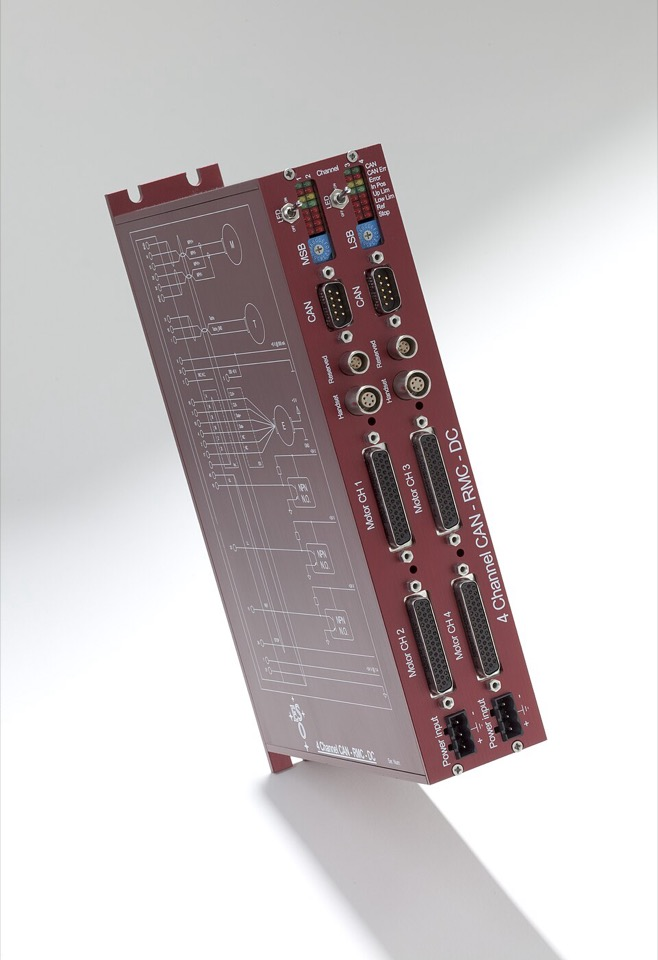
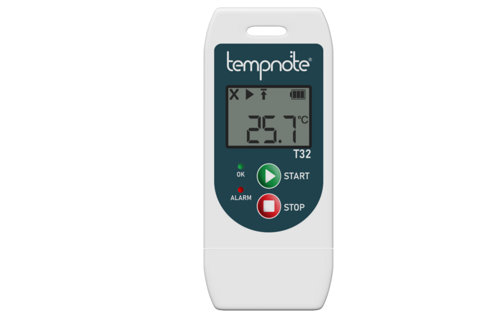

Time series, bus layers and evidence quality
A number can be correct and still answer the wrong question when the clock, units or physical layer are unclear.
Separate the wire, the data and the units
Electrical transitions are the physical signal. Frames add structure such as identifiers and checks. An application then assigns names, units, byte order and timing to frame fields. A healthy Ethernet link does not prove a BMS point is mapped. A received CAN frame does not establish the value until its payload is decoded against the agreed mapping.

Photo by ESO/H.H.Heyer, scaled for the course. Original · CC BY 4.0.
.jpg){kind=link}

Photo by Pulkit Patel, scaled for the course. Original · CC BY-SA 4.0.

Watch on YouTube · Follow the frame from a send command to a dump readout. Keep the exercise on the virtual interface named in this lesson. CAN-utils over VCAN | Virtual CAN Interface Tutorial | Linux SocketCAN · The EV Engineer.
Sampling changes what you can observe
For a band-limited signal you need a sample rate higher than twice its highest frequency to reconstruct it in the ideal case. A 70 Hz tone sampled at 100 Hz can appear at 30 Hz. On real inputs use suitable anti-alias filtering and room for the filter transition band. A trend database may also compress, average or skip repeating values.
If a sensor reports every 200 ms but the logger publishes averaged values once per second, the streams describe different things. A meter’s steady reading cannot show a 2 ms dip unless its capture function supports it.
Record data freshness and meaning
Record timestamp of capture, timestamp of arrival, quality and units. A 10:00:00 source sample shown at 10:00:30 is 30 seconds old even if the page refreshed just now. Use compatible clocks when comparing upstream and downstream times. Use a monotonic elapsed clock for timeouts on one machine so adjustments to wall-clock time do not create false ages.
Record an expected update interval, identify which event makes data invalid and show a missing-data gap in charts. Linux SocketCAN documentation · Ignition history documentation.